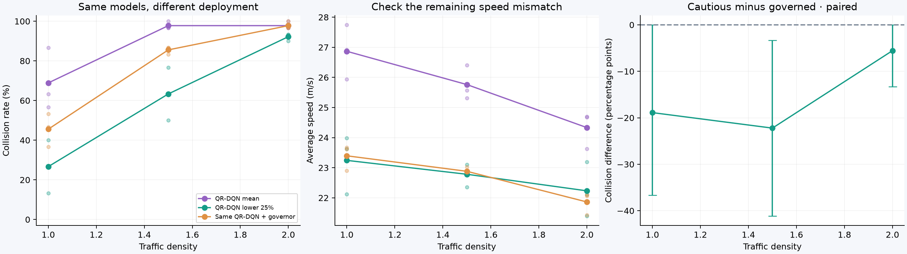
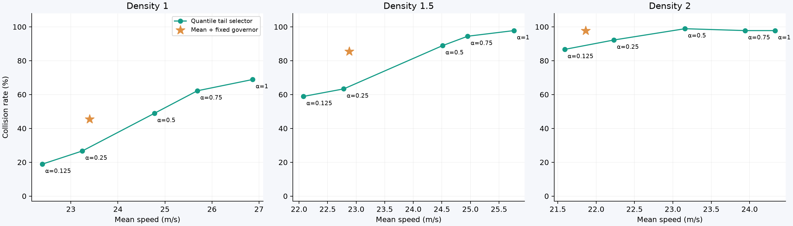
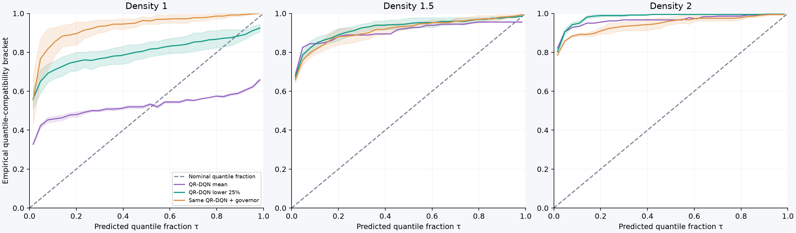
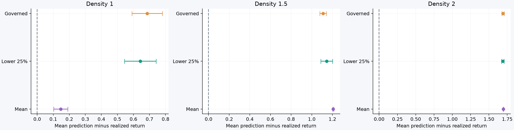
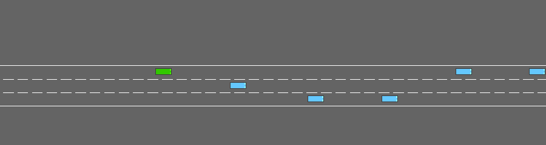

DEEP REINFORCEMENT LEARNING / DEVELOPMENT EXPERIMENT
Closer speed control. A useful heuristic. Unreliable return forecasts.
The same QR-DQN checkpoints now face two deployment choices: prioritize lower-tail outcomes, or keep mean selection and add an ego-speed governor. A separate rollout block probes whether the learned return distributions deserve our trust.
18.9 pp fewer
normal-traffic collisions vs the same model with a governor
0.15 m/s
absolute normal-traffic mean-speed difference
3 training seeds
same frozen networks · no additional training for this analysis
Promising comparison, limited evidence. The normal-traffic paired collision difference is −18.9 percentage points. Its exploratory 95% two-way-bootstrap interval is [-36.7 to 0.0] pp and reaches zero. The governor threshold (25 m/s) was chosen by seed-0 speed closeness only. Speeds are closer on average; their distributions and action interventions still differ. Final confirmation scenarios remain unused.
Compare deployment policies
Inspect paired training-seed differences
30 development scenarios per density per trained model, block 10000–10029. Rates are equal-weight seed averages. Ranges describe the three training seeds, not confidence intervals.

The paired intervals resample training seeds and shared scenario seeds independently. They are exploratory, conditional on development choices, and do not adjust for selecting the control threshold.
Explore the risk–speed frontier
Move the control to inspect already-evaluated policies. Alpha is the fraction of the predicted lower-return tail used to score an action. Alpha 1 uses the mean. The primary policy remains alpha 0.25; the sweep does not select a replacement.
Collisions:
Speed:
Density:

Every point averages the same three networks and 30 scenarios per density. A smaller alpha does not carry a general safety guarantee.
Can the return distributions be trusted?
These diagnostics use a separate block, 12000–12059: 60 initial-state rollouts per density per training seed. Each prediction is compared with discounted return under its deployed continuation policy. Only mean deployment follows the training continuation rule.
Do not read the quantiles as reliable safety probabilities. Forecasts are optimistic under denser traffic, including mean deployment. Cautious and governed deployments also change the continuation policy the network was trained to predict.

A valid tau-quantile satisfies P(G<q) ≤ tau ≤ P(G≤q). Shading brackets censoring and ties using observed return intervals. It is not a sampling confidence band. Diagonal agreement is a marginal diagnostic, not a conditional calibration guarantee.

Positive bias means optimistic prediction. Bars bound the missing continuation after a 30-second sampling cutoff; they omit sampling uncertainty. Collision terminations have exact returns. We do not discard surviving episodes or impute their future rewards as zero.
Inspect recent actions around failures
This table uses the separate calibration block at the selected density. *Fractions among crashing episodes, looking back at most three decisions. A recent request or transition is not evidence that it caused the crash. Stored nearest-neighbor geometry is a proxy, not an identified collision partner. These measurements do not establish that any scenario was unavoidable.
Replay the same initial scenario
Training seed 0, scenario 10000, normal traffic. Chosen by seed before outcomes; one episode cannot represent the aggregate comparison.
Mean-selected QR-DQN

Lower-25% QR-DQN
Same QR-DQN with the selected governor